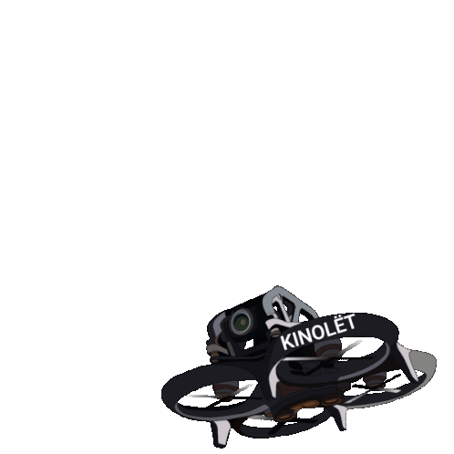

JATAYU with distributed Network (enabled with Object
Detection )

Research And Analysis
Drone Usage By Industry Sector
Drone Heights During Rescue Operation
Drone Used by Countries in Rescue Operation
Applications of drone in Disaster Management
Drone Payload Affect Flight Time
Top 10 Countries with most diasaters, 2005-2014
Number of disasters
Total damage ($ billion)
Applications
Drone Driver
Drone Command Center for seamless rescue operations. Empowers global control, live data streaming, user-friendly interface, data security, mission logs, real-time alerts, remote collaboration, training, object detection, and visual feedback.
Emergencies
The Drone Command Center manages emergencies such as borewell entrapments and collapsed structures, facilitating real-time monitoring and swift rescue operations. It ensures the safety of individuals in distress through effective response strategies.
Specialities
The described Drone Command Center specializes in managing emergencies like borewell entrapments and collapsed structures, providing real-time monitoring and swift rescue operations to ensure the safety of individuals in distress.
Key Features
1.Control and monitor the JATAYU globally in
real-time.
Intuitively designed interface for easy navigation and
quick access to vital information.
3.Robust data encryption and authentication protocols
prioritize privacy and security.
Support for remote collaboration enables experts to
contribute insights and make collaborative decisions.
2.Assess the situation:
Capture detailed mission logs and analyze data to optimize
rescue strategies.
4.Real-time alerting systems notify of significant
developments, enhancing operational efficiency.
Interactive training and simulation modules prepare
personnel for real-world rescue scenarios.
Specialize in integrating drone technology with the app, allowing users to deploy drones for aerial reconnaissance and assistance during rescue missions. This could involve features like automated flight control, live video streaming, and thermal imaging for detecting heat signatures in borewells.
A payload dropping mechanism is a critical component of a drone's rescue operation capabilities, allowing it to deliver essential supplies, such as food, water, first aid kits, and communication devices, to people in need. The mechanism is typically designed to be lightweight, reliable, and easy to operate.
Remote surveillance utilizes cameras and sensors to gather data from a location, transmitting it wirelessly to a central station. Operators analyze for anomalies, prompting immediate alerts. The system runs continuously, recording footage for analysis, and works with other security systems for a comprehensive threat response.
They identify dangers in real-time, triggering alerts for personnel. These adaptable systems integrate with safety protocols, logging data for analysis and continuous improvement, ensuring safety and efficiency in challenging conditions.